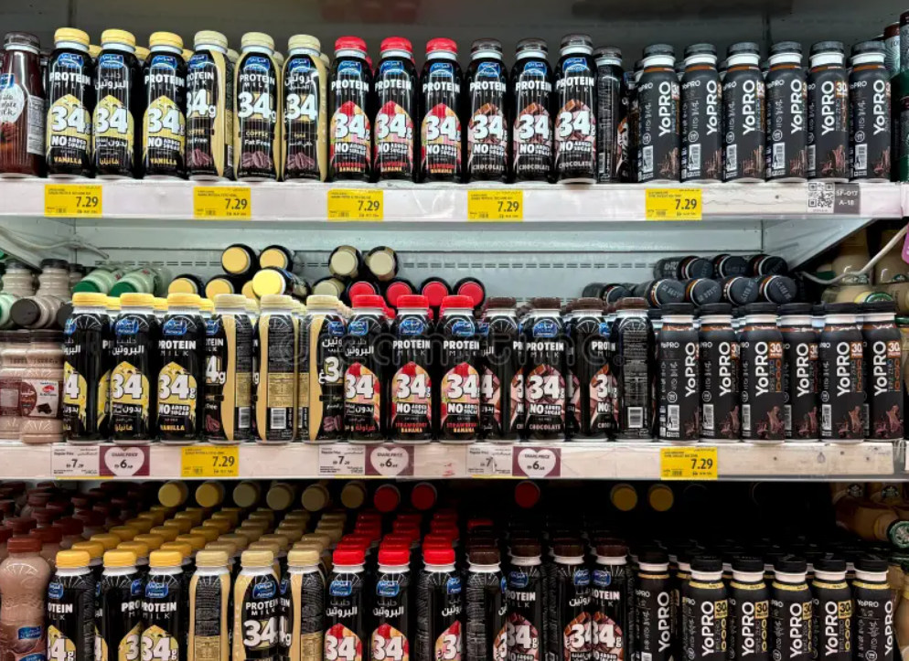
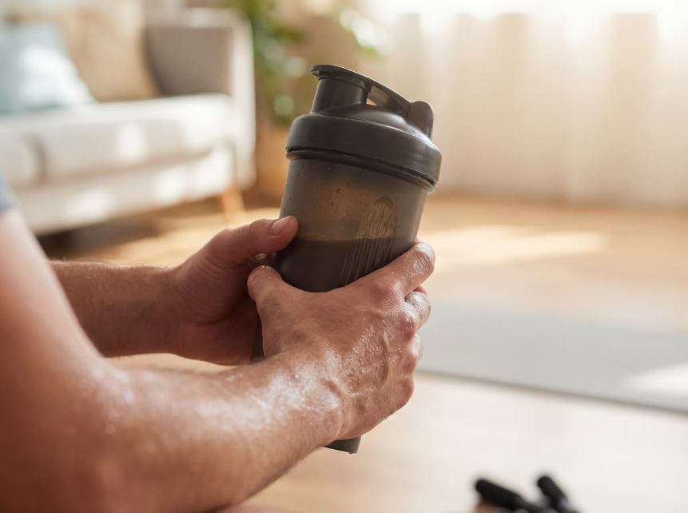
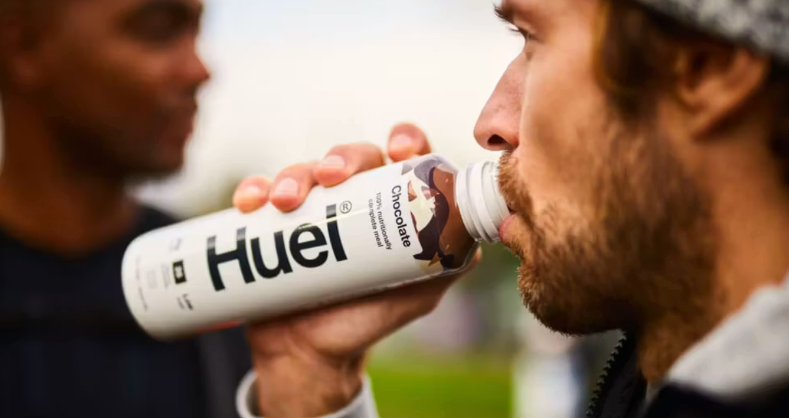
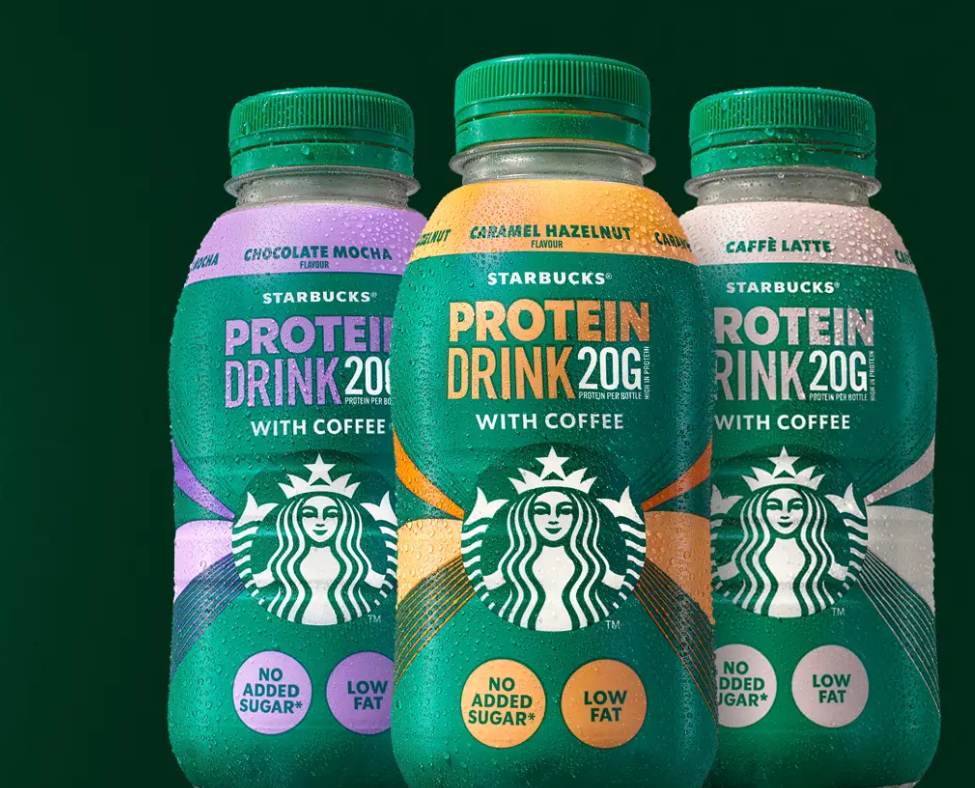
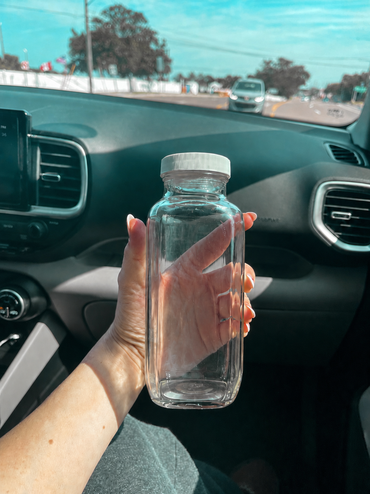

La demanda de proteína permite entrar. No hace que la marca sea diferente
Protein RTD / pregunta de negocio
¿Cómo puede una marca entrar en protein RTD uniendo señales de ocasión, formato y repetición?
La pregunta mantiene el estudio comercial desde el inicio. El consumidor ya quiere proteína. Lo difícil es darle una razón para elegir una botella, recordarla y volver a comprarla cuando el lineal está lleno de promesas parecidas
Alcance: caso de entrada al mercado para marcas, distribuidores y equipos comerciales que deciden dónde protein RTD todavía puede crear un negocio diferenciado
01
Problema
La demanda de proteína no es el problema. La similitud sí
La mayoría de marcas protein RTD puede decir alta proteína, bajo azúcar, buen sabor y conveniencia. Esos claims permiten entrar en el lineal. Por sí solos no crean una razón para pagar más, cambiar de marca o repetir
Cuando todos los packs dicen lo mismo, el consumidor todavía necesita una razón para repetir
La repetición depende de sabor, textura, precio y de saber cuándo tomarlo
El mensaje útil no es "más proteína". Es "proteína para este momento"



02
Señal
La categoría se está moviendo hacia rutinas cotidianas
El mercado ya no habla solo de usuarios de gimnasio. La proteína aparece en desayuno, café, snacks y rutinas de control de peso. RTD hace que esa demanda se pueda comprar sin polvo, preparación ni limpieza
La proteína se vuelve mainstream, no solo atlética
RTD crece porque elimina la fricción de los polvos y la preparación de comidas
La categoría se expande de batidos a bebidas, café, dairy y formatos plant-based
Las grandes compañías tratan protein RTD como plataforma, no como producto nicho
CAGR previsto: 7.70%
02
Señal
Los movimientos de compañías confirman que no hay un solo formato
Los casos muestran hacia dónde va la categoría: los players dairy escalan, los batidos clásicos defienden el espacio obvio, plant-based y complete nutrition atraen compradores, y el café lleva la proteína a una rutina ya existente
Credibilidad dairy, sabor y distribución retail se convierten en ventajas fuertes en protein RTD
El espacio clásico de batidos RTD ya está ocupado, lo que debilita una entrada copycat
Los compradores estratégicos buscan marcas con usuarios fieles, repetición y plataformas expandibles
La lógica de crecimiento más fuerte conecta proteína con rutinas que el consumidor ya tiene
| Caso | Acción de negocio | Qué señala |
|---|---|---|
| fairlife / Core Power | Construyó una plataforma dairy mainstream alta en proteína. | La proteína puede escalar cuando sabor, credibilidad dairy y distribución retail trabajan juntas. Fuente |
| Premier Protein | Posee el espacio clásico de batidos RTD. | El formato estándar de batido ya es competitivo. Fuente |
| Oikos | Entró en protein shakes desde una base de yogurt. | Las marcas dairy se están extendiendo hacia RTD protein. Fuente |
| OWYN | RTD protein plant-based adquirido por un jugador mayor. | La proteína plant-based tiene valor cuando resuelve necesidades de alergia, lifestyle y conveniencia. Fuente |
| Huel | Plataforma de complete nutrition que se expande a través de RTD. | RTD protein se mueve hacia meal replacement y nutrición diaria. Fuente |
| Protein coffee brands | Conectan proteína con rutinas de café. | El crecimiento más fuerte aparece cuando la proteína se conecta a un hábito existente. Fuente |
02
Señal
El patrón es práctico: menos esfuerzo, ocasiones más claras y repetición más fácil
La lógica es práctica. Los productos que viajan más lejos son los que reducen esfuerzo, encajan en un momento que ya existe y saben suficientemente normal como para repetirse
También habla de saciedad, energía, control de peso, healthy aging y nutrición diaria
RTD elimina mezcla, limpieza y planificación. Convierte la proteína de tarea en elección inmediata
La proteína entra en café, clear drinks, agua, bebidas lácteas y plant-based que compiten con bebidas normales
El crecimiento llega cuando la proteína posee un momento: desayuno, café, snack de trabajo, meal control o recuperación
Las marcas más fuertes no enseñan un comportamiento nuevo. Conectan proteína con rutinas que la gente ya entiende
Proteína con fibra, energía, digestión o hidratación puede sumar valor, pero demasiados claims dificultan leer el lineal
Lógica antigua
Proteína comprada para entrenar
Gimnasio, polvos, batidos densos, recuperación post-entreno
Nueva lógica
Proteína comprada para rutinas diarias
Café, desayuno, snack de trabajo, comida ligera, nutrición diaria
Consumidores que aumentan proteína muestran que la categoría ya no depende solo del deporte
Forecast de mercado RTD protein para 2031 apoya la tesis de conveniencia
Forecast de protein coffee para 2034 muestra el poder de unir proteína a rutinas existentes
02
Señal
La señal también muestra por qué entrar es difícil
La demanda no es la barrera. Lo difícil es convertir prueba en repetición cuando el lineal está lleno, los claims se parecen y los competidores grandes pueden comprar espacio, promoción y atención
Alta proteína, bajo azúcar, buen sabor y conveniencia se vuelven tickets de entrada, no diferenciadores
El consumidor mainstream compara protein RTD con bebidas normales; notas chalky, densas o artificiales dañan la repetición
RTD debe justificar un premium frente a polvo, café, yogures bebibles y snacks cotidianos
Aislados, edulcorantes, gomas y claims fortificados pueden chocar con la demanda de nutrición más simple
Si el producto no posee un momento claro, el consumidor puede probarlo una vez y olvidar cuándo repetir
Las grandes compañías usan distribución, supply chain, marcas de confianza y promos para defender el lineal
fairlife alcanzó escala billion-dollar, mostrando el poder de credibilidad dairy más distribución
Simply Good Foods adquirió OWYN, mostrando valor estratégico en plataformas RTD diferenciadas
El crecimiento previsto atrae más entradas, lo que eleva la exigencia de diferenciación
03
Decisión
Construir una bebida proteica diaria más ligera, no otro batido denso
La mejor jugada no es otro batido denso de chocolate. Es un producto que ayuda al consumidor mainstream en un momento real: desayuno, café, snack de tarde o una comida ligera que falta
Ruta saturada
Otro batido de chocolate 25g
Alta comparación, incumbentes fuertes y poca razón para repetir
Ruta mejor
Una bebida proteica diaria más ligera
Ocasión clara, mejor sabor, bajo azúcar y un segundo beneficio creíble


Conecta proteína con una necesidad frecuente: empezar rápido cuando el consumidor salta desayuno o depende solo del café
Une proteína a una rutina que la gente ya entiende, haciendo que el producto se sienta como upgrade y no suplemento
Compite con dulces, vending, otro café o un snack de baja calidad cuando el consumidor busca una solución pequeña
Añade saciedad, digestión y meal control, haciendo la propuesta más fuerte que más proteína sola
Se aleja del batido pesado hacia refreshment, hidratación y ocasiones cotidianas de bebida
Conecta proteína con un problema diario real: necesitar algo rápido, porcionado y más útil que un snack
Forecast de protein coffee para 2034 muestra la escala de unir proteína a rutinas de café
La fibra añade fullness, digestión y meal-control a un claim de proteína ya saturado
Formatos clear, café y beverage-style ayudan a competir fuera del mindset suplemento
Decisión
Entrar como marca de bebida proteica diaria, no como marca de nutrición deportiva
La elección estratégica es construir alrededor de una ocasión frecuente, especialmente mañana o snack de tarde, y hacer que el producto se repita por sabor, conveniencia, bajo azúcar y un beneficio creíble como fibra
Eso aleja la marca de una carrera por gramos. El trabajo es más simple y más comercial: hacer que la proteína diaria sea fácil de comprar, fácil de beber y fácil de recordar
04
Qué debería hacer ahora una marca
¿Qué debería hacer ahora el negocio?
El lanzamiento necesita disciplina: una audiencia, una ocasión principal, una promesa de producto simple y una ruta al mercado que genere prueba rápido
El producto debe sentirse útil antes, entre o en lugar de comidas, no solo después de entrenar
Son momentos frecuentes, fáciles de entender y cercanos a comportamientos de bebida existentes
Ganar con visibilidad en frío, sampling, bundles y un mensaje que el consumidor pueda repetir en una línea

Personas que quieren más proteína sin polvos, batidos pesados ni una identidad de nutrición deportiva
Elegir primero un momento líder. La frecuencia importa más que reclamar todos los usos posibles
Suficiente proteína para ser creíble, suficientemente ligero para repetir y funcional para justificar precio
Retail para escala, convenience para impulso, online para bundles y sampling para cambiar comportamiento
Simple, mainstream y dirigido por ocasión. Vende el trabajo, no la lista de ingredientes
Construir el lanzamiento alrededor de la prueba: meal deals, rutinas con creators, oficinas, gimnasios y starter packs
Elegir proteína de mañana o snack de tarde y construir sabor, pack, jerarquía de claims y canal alrededor
Testar prueba en frío, drops en oficinas y starter packs antes de ampliar distribución
Expandir a supermercado, convenience y online cuando la rutina y el mensaje ya funcionen
Cargill muestra demanda de proteína, pero también sabor como condición clave para adopción mainstream
NielsenIQ sitúa la proteína y la fibra dentro del conjunto de beneficios de nutrición funcional que percibe el consumidor
fairlife muestra cómo una plataforma proteica escala cuando sabor, credibilidad dairy y distribución trabajan juntas